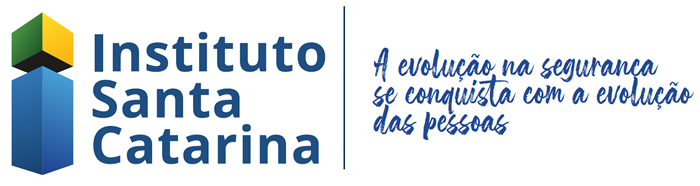

Carlos Salgado
- Cidade: Itajaí
- Telefone: (47)99741-8076
- Email: cadusalgado2001@hotmail.com
Objetivo
Tornar o complexo em simples, transformar a vida das pessoas através da programação e aprender no processo
Formação
Gradução em Análise e Desenvolvimento de Sistemas
Em andamento - UNICESUMAR
Experiência

Programador - Instituto SC
Atuando em desenvolvimento de funções e soluções para plataforma online
Habilidades